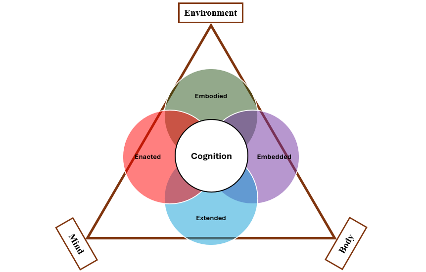

ARTH: Adaptive Reuse Thinking for Housing (VR Learning Environment)
Summary
ARTH (Adaptive Reuse Thinking for Housing) is a Unity-based VR learning environment where learners transform an old factory/warehouse into a new interior program (e.g., office, living room, bedroom, or a full residential layout). The experience is structured as a hands-on adaptive reuse task: users clear existing industrial elements, then iteratively build and furnish a new layout using a digital tablet tool, grid-assisted placement, and three interaction modes (placing, demolition, and editing). Real-time “valid/invalid” feedback (green vs. red) encourages rapid iteration while keeping placements spatially plausible.
A preliminary user study with students from different backgrounds suggested the experience is usable and engaging—overall results were promising.
UnityVRXR InteractionAdaptive Reuse4E Cognition
Project at a glance
Learning scenario
Starting point: an industrial warehouse/factory filled with outdated elements.
Goal: transform the space into a functional and stylish residential interior through iterative design decisions.
Core activities: site exploration, selective removal, spatial planning, construction of partitions/ceilings, furnishing, and material selection.
My role
Designed and implemented the VR experience flow, UI, and interaction logic
Led study deployment and data collection (setup, participant sessions, and instrumentation)
Synthesized findings and co-authored project manuscripts
A short introduction that explains the goal: start with a blank shell (walls/floors/ceiling) and use the provided tools to create a new program; no limits, just exploration and iteration.
Experience flow
ARTH is structured as a complete, learn-by-doing adaptive reuse workflow, from understanding the existing conditions to testing and refining a new spatial proposal:
1) Orient + read the site
Start inside the original warehouse and explore the existing elements and structure before changing anything.
Walk the space at full scale and identify constraints (columns, beams, openings).
Use exterior cues (e.g., surroundings and signage) to build spatial orientation.
2) Clear what’s obsolete
Switch to demolition mode to remove outdated industrial components while preserving primary structural elements.
Remove non-structural partitions and machinery to reveal design opportunities.
Use removal as an explicit “adaptive reuse” decision: what stays vs. what goes.
3) Build + furnish iteratively
Use placing mode (tablet + ray selection) to create layouts, then editing mode to refine.
Place walls/ceilings with grid assistance for cleaner alignment.
Place furniture with collision checks to prevent unrealistic intersections.
Adjust orientation and position through direct manipulation.
Tablet interface + placement feedback
The tablet UI is the “external workspace” inside VR: it reduces menu friction and keeps the learner focused on spatial reasoning rather than tool hunting. A grid system and constraint checks provide immediate feedback, supporting realistic decision-making.
Before vs. after. The original warehouse condition (left) and the cleared design space with the tablet interface for selecting components and materials (right).
Placement feedback: invalid placements highlight in red, valid placements highlight in green, then the object is committed to the scene.
Grid + constraints (why it matters)
Structural placement: grid guidance helps align walls and ceilings for cleaner spatial organization.
Conflict detection: green vs. red feedback reveals collisions and prevents unrealistic intersections.
Lightweight “structural logic”: ceilings can start above walls, but extending them requires additional supporting walls—encouraging planning and load-bearing awareness.
Learning design: 4E cognition as a blueprint
ARTH is designed around the 4E cognition framing—treating learning as something that happens through the body, through action, inside context, and with the help of tools.

4E cognition framing used to guide experience design: embodied interaction, embedded context, enacted learning-by-doing, and extended tools that offload and support reasoning.
Embodied
Full-scale navigation, reaching, pointing, grabbing, and spatial manipulation.
Physical engagement supports “thinking with the body” in layout decisions.
Embedded
Learning occurs inside a realistic industrial shell with constraints and contextual cues.
Adaptive reuse is framed as context-sensitive decision-making (site + structure + program).
Enacted
Knowledge emerges through action: remove, place, test, revise, and iterate.
Immediate feedback makes consequences of decisions visible in real time.
Extended
The tablet UI and placement system act as external cognitive supports.
Tools reduce memory/coordination load, freeing attention for spatial reasoning.
Outcome
A VR prototype that supports an end-to-end adaptive reuse scenario: from exploration and demolition to building, furnishing, and refinement.
A reusable interaction toolkit for mode switching, tablet-based selection, grid-assisted placement, and constraint-driven feedback.
Study-ready deployment setup; early evaluation feedback was promising.